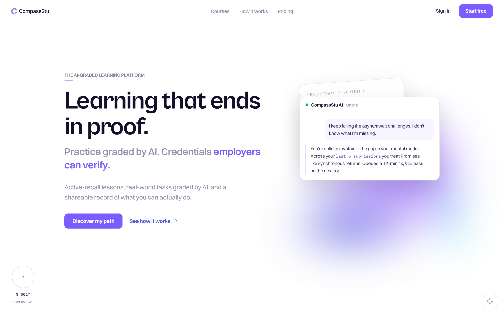

CompassStu — Retheme v3 · Moodboard
SPEC v3.0 · 2026
pro
o
f.
Proof Score
73 / 100
01 · Light
#7A5CFF
#4F5BD5
#F2994A
#1E9E6A
02 · Colour
compassstu.com

03 · Product
If it glows, ship it.
Luminous
Credentialed
Engineered
AI-native
Restrained
#7A5CFF
— the one light source